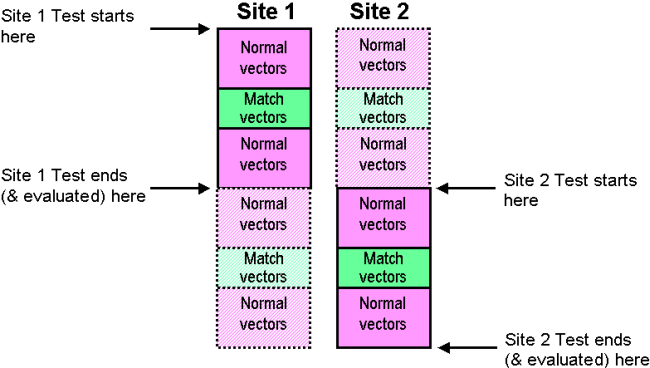

Serial Execution of Testsuite
A further solution to the problem of parallel match loops, is not to enable parallel execution of the particular test suite in which they occur.
The figure below shows schematically what happens when the case illustrated in the section Considerations for Match Loops is executed in series.

The serial and match loop vectors are applied to both sites. However, when the site 1 receivers are active, the site 2 receivers are disabled, and vice versa.
Note Because both sites always receive drive data, but may have their receivers
masked at a particular time, this solution can only work within a self-contained test
suite.
Functional changes
- Introduced before SmarTest 6.3.2